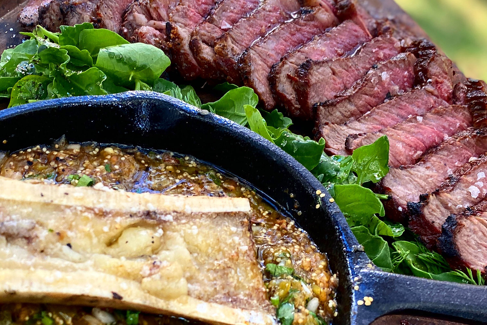

Newyork con salsa verde de tuétanos

Ingredients
- 2 Newyorks de 1.5
- 3 tuètanos
- 350gr tomates verdes
- 2 chiles serranos
- 2 chiles gueros
- 3 chiles de arbol
- 1/2 limon
- 3 ajos
- 1/2 cebolla blanca picada
- 1/4 de manojo de cilantro picado
Preparacion
- Cocina tus cortes con la técnica de sellado reversible (sazónalos con sal y pimienta y ponlos a fuego directo durante 8-10 minutos con la tapa puesta. Después pásalos a fuego directo y séllalos volteando el corte cada 30-40 segundos hasta que tengas una costra bastarda).
- Coloca los tuétanos a fuego indirecto durante 10-15 minutos. Sazona solo con sal y pimienta
- Coloca los chiles, el ajo y los tomates verdes a fuego directo y tatémalos
- En un molcajete muele todo y agregar al final los tuétanos, el cilantro y la cebolla crudos. Sazonar con sal, pimienta y limón
- Acompaña tu corte con esto, ó haz tacos, o haz tortas. Haz lo que quieras pues, ni si quiera estamos ahí.
Return